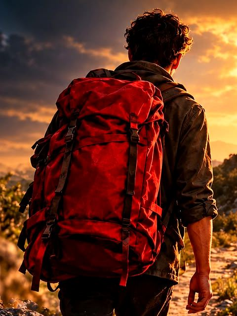
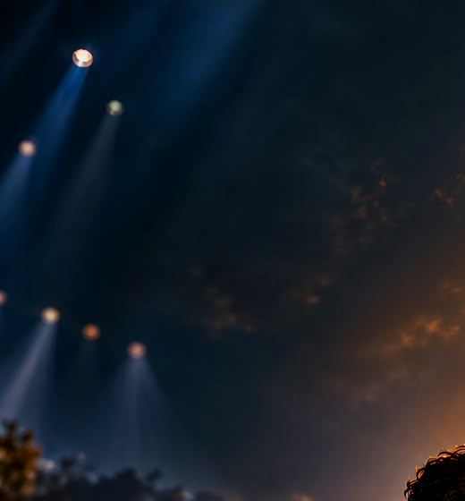
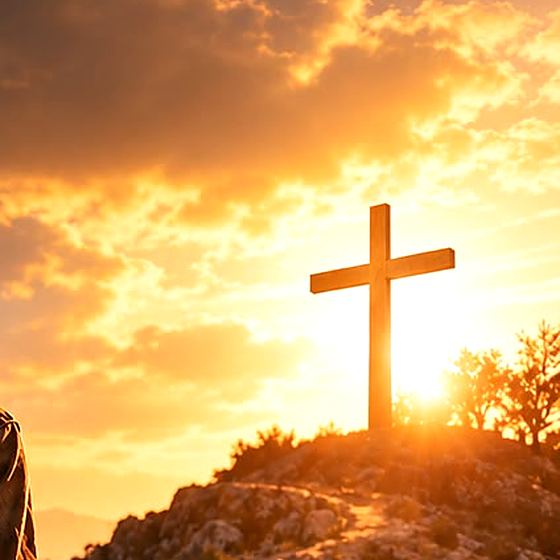

01 Voorbeeldverhaal
Het verhaal, in drie shots
Een jonge man pakt zijn rode rugzak en laat het vertrouwde achter zich. Hij weet niet waar de weg naartoe leidt, alleen dat hij moet gaan.
-

Shot 01 · Vertrek
De rugzak is zwaarder dan gedacht
De deur valt achter hem dicht. Alles wat hij meeneemt, draagt hij zelf. En een paar dingen die hij liever thuis had gelaten.
-

Shot 02 · Onderweg
Er gaan lampen aan in de lucht
Onderweg ontmoet hij mensen die hem iets meegeven: een lied, een vraag, een hand op zijn schouder. Twijfel en hoop lopen een eind met hem op.
-

Shot 03 · Aankomst
Bovenaan valt het licht anders
Op de top wacht geen antwoord in grote letters, maar een plek om stil te staan. Een verhaal over geloven dat de weg zelf de moeite waard is.
“Ik hoef niet te weten waar de weg eindigt. Ik hoef alleen de volgende stap te zien.”